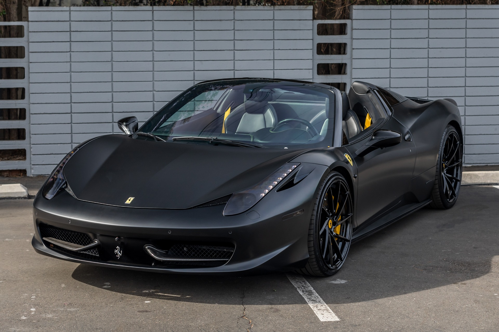
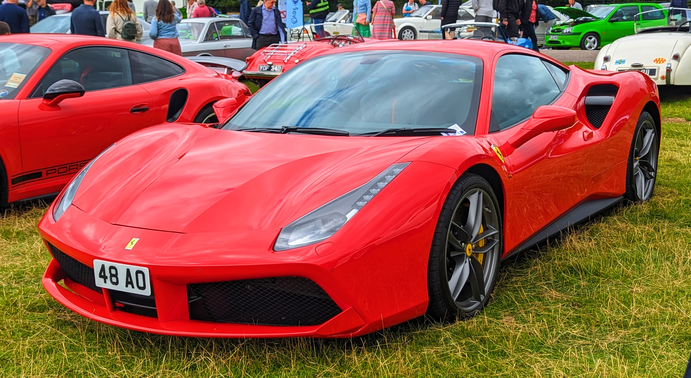
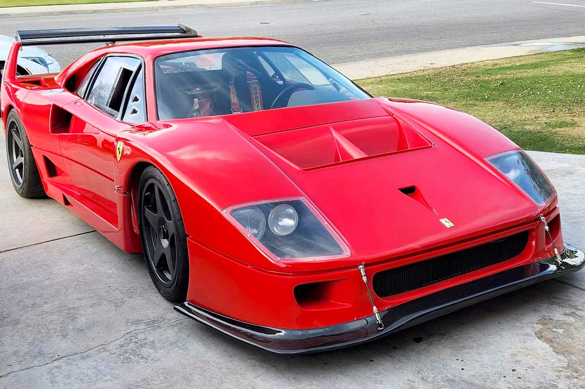
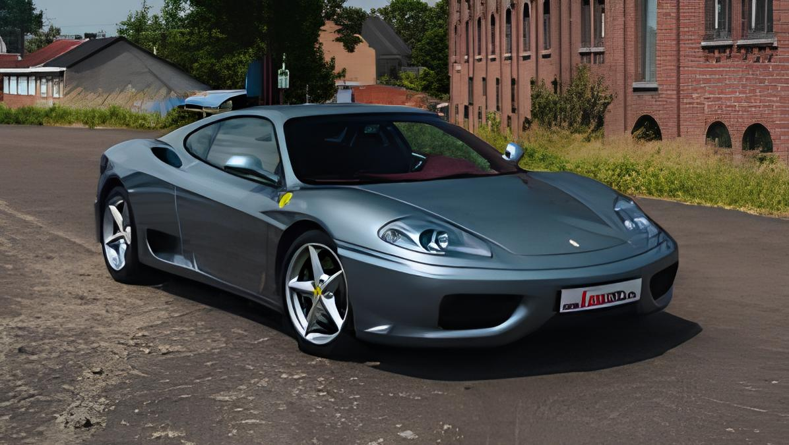
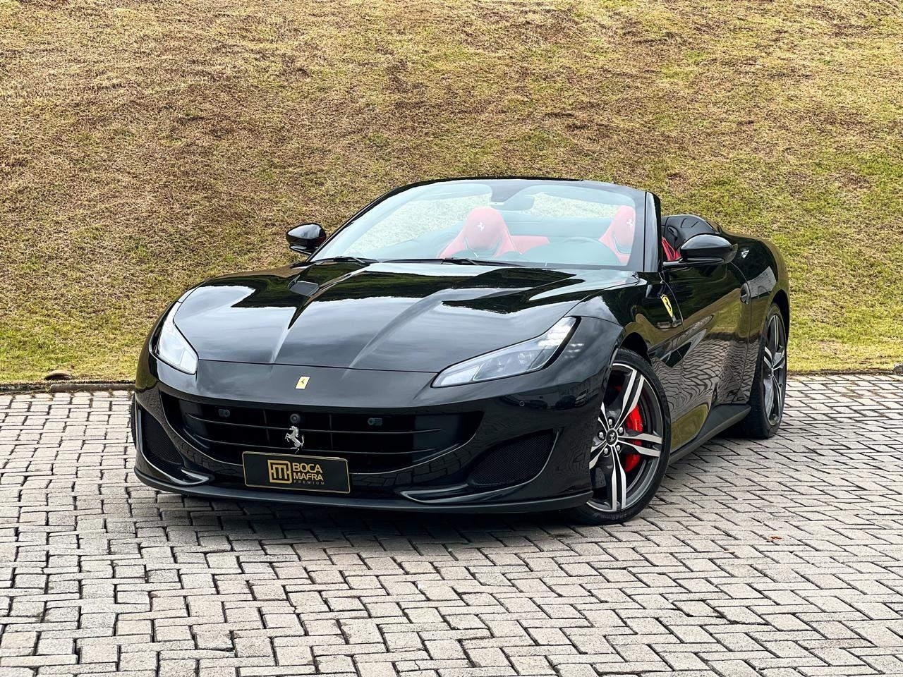
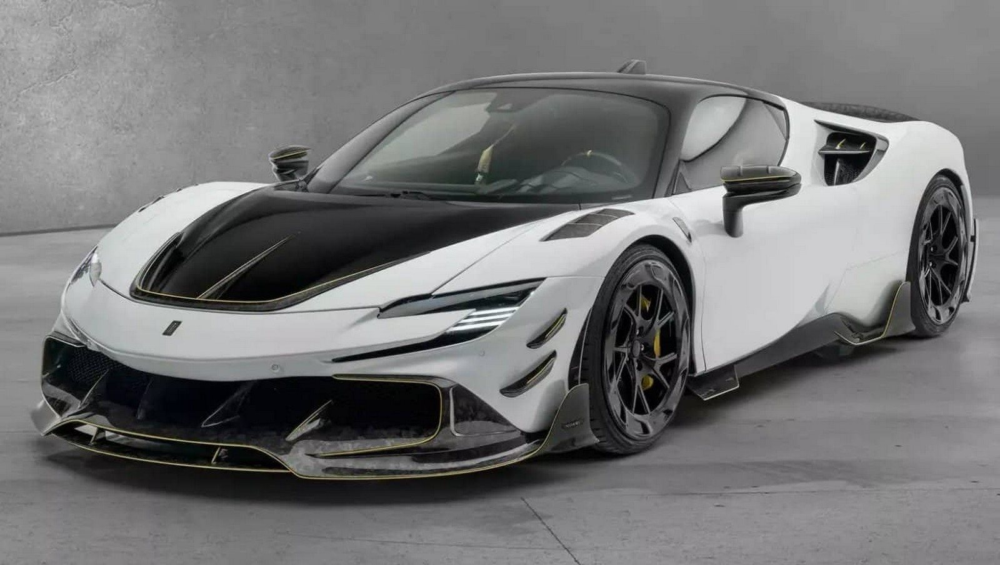

| Preço | R$ 1,6 ~ 1,9 milhão |
| Consumo Cidade | 5,2 km/L |
| 0 a 100 km/h | 3,4s |
| Cavalos | 570 cv |
| Torque | 55 kgfm |

| Preço | R$ 2,3 ~ 2,6 milhões |
| Consumo Cidade | 6,1 km/L |
| 0 a 100 km/h | 3s |
| Cavalos | 670 cv |
| Torque | 77,5 kgfm |

| Preço | R$ 18 ~ 25 milhões |
| Consumo Cidade | 3 km/L |
| 0 a 100 km/h | 3,1s |
| Cavalos | 700 cv |
| Torque | 72,5 kgfm |

| Preço | R$ 550 ~ 750 mil |
| Consumo Cidade | 4,5 km/L |
| 0 a 100 km/h | 4,5s |
| Cavalos | 400 cv |
| Torque | 38 kgfm |

| Preço | R$ 1,9 ~ 2,2 milhões |
| Consumo Cidade | 6,2 km/L |
| 0 a 100 km/h | 3,5s |
| Cavalos | 600 cv |
| Torque | 77,5 kgfm |

| Preço | R$ 4,5 ~ 5,2 milhões |
| Consumo Cidade | 7,8 km/L |
| 0 a 100 km/h | 2,5s |
| Cavalos | 1000 cv |
| Torque | 81,6 kgfm |